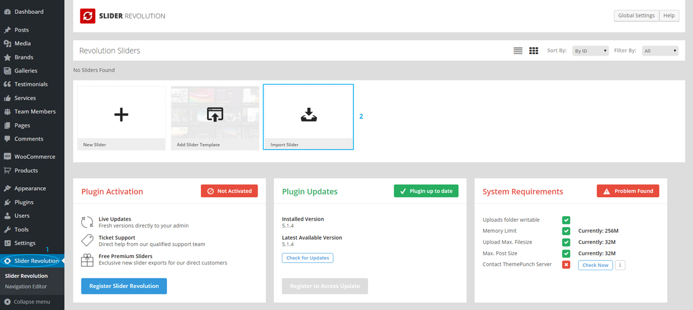
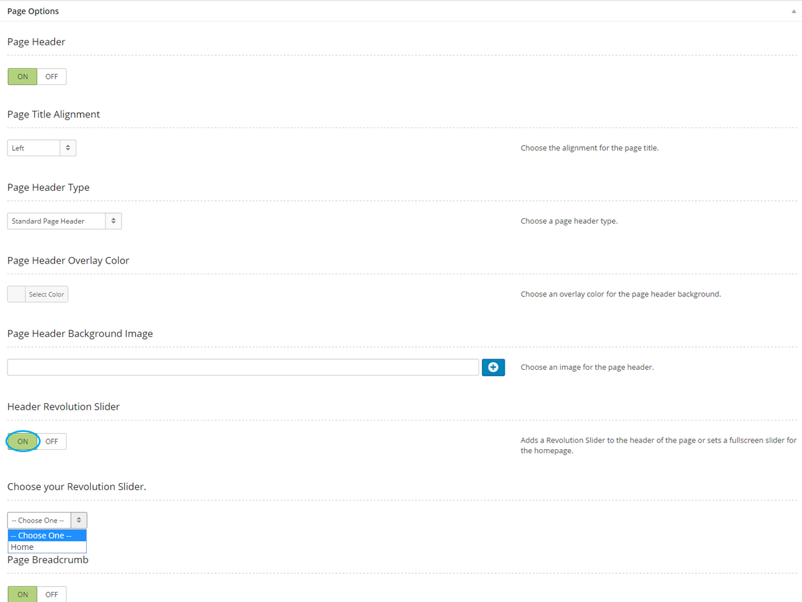
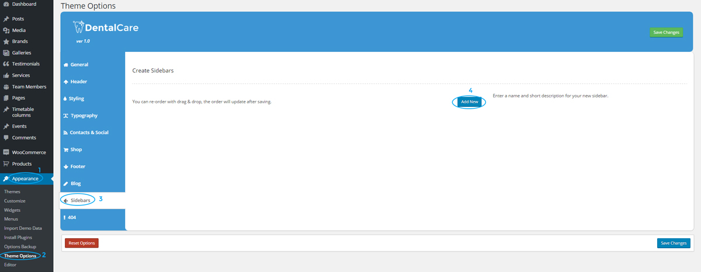

Dental Care
Dental & Medical WordPress Theme
- created: 07/02/2015
- latest update: 30/06/2016
- by: Stronghold Themes
- themeforest.net/user/strongholdthemes
- email: strongholdthemes@gmail.com
Thank you for purchasing our theme. If you have any questions that are beyond the scope of this help file, please feel free to contact us. Thank you very much!
Features
- Responsive Layout
- Retina Ready
- Unlimited Color Schemes
- WooCommerce Ready
- Built-in Mega Menu
- Navigation and Page Header Styles
- Contact Form 7 Ready
- Custom Dental Icons
- Visual Composer (save $34)
- Revolution Slider (save $19)
- Ultimate Addons for Visual Composer (save $18)
- Booked - Appointment Booking for WordPress (save $34)
- Booked Payments with WooCommerce (save $14)
- Documentation included
- One-Click Demo Import
- Sample content included
- Child theme included
- WPML & Translation ready - translation files included
- Unlimited sidebars - can be set to left or right
- Built-in mega menu
- Built-in galleries with lightbox functionality - tile gallery, justified gallery, slider gallery, carousel galley and video gallery
- Custom post types - Services, Team Members, Galleries, Testimonials, Brands
- Customizable Footer widget area - supports one, two, three or four columns
- Custom logo & favicon
- 600+ Google fonts
- Social media integration
- Font Awesome integrated
- One page support
Theme Installation
Dental Care can be installed using one of two methods:
- WordPress admin dashboard installation.
- FTP upload installation.
WordPress admin dashboard installation
- Login
-
Click Appearance => Themes => Add New
-
Click Upload Theme
- Click Choose File then navigate to where the theme is downloaded and choose dental-care.zip to upload it.
-
Next click Install Now to begin the installation process.
- When the installation is finished click Activate to complete the process.
FTP upload installation
- Unzip the dental-care.zip file to get the dental-care theme folder
- Use your ftp client to navigate to the themes folder. To do this click the (wp-content) folder then click the themes folder.
- Upload the dental-care folder to the themes folder
- Login to the WordPress admin dashboard.
- Click Appearance => Themes.
- Click the Activate button by the Dental Care theme.
How to update the theme
The theme can be updated using one of the methods mentioned below.
- FTP Theme Upgrade
- Dashboard Theme Upgrade
- Envato Market Plugin
FTP Theme Upgrade
The process of updating the theme via FTP will be the same as the FTP upload installation, so you can repeat those steps to update the theme.
When working with WordPress your content (pages, posts, menus and custom post type posts) and custom theme option styles and settings are stored in the database not the theme files. This means that deleting the theme folder then re uploading it will not delete your content.
Dashboard Theme Upgrade
You can follow the steps below to update the theme using your dashboard.
- Appearance => Themes. Activate Twenty Sixteen theme. (You can't delete a theme while it is active)
- Click the Dental Care theme to view theme details. In the bottom right click Delete to delete the old version of the theme.
- After deleting the theme, click Add New, to the top of the themes page.
- Next click Upload Theme then click Choose File to select the theme zip folder. Then click Install Now.
- After it is finished installing click Activate to finish.
- You can also repeat these steps to add the included child theme.
When working with WordPress your content (pages, posts, menus and custom post type posts) and custom theme option styles and settings are stored in the database not the theme files. This means that deleting the theme folder then re uploading it will not delete your content.
Envato Market Plugin
To update the theme using the Envato market plug-in you first need to make sure you have it installed and activated.
- From the WordPress dashboard click Envato Market.
- Next click generate a personal token to create an Envato API personal token.
- On the next screen use your Themeforest login information to sign in. Then enter a token name and click Create Token.
- Paste the generated token in Token field in the Envato market plug-in and click Save Changes.
- With this plug-in setup you will receive theme updates automatically in your dashboard.
Theme Setup
Plugin Installation
After installing the theme you will be presented with a message indicating that the theme requires some plugins. You should install these plugins for optimal usage of the theme.
-
To install these plugin, first click Begin installing plugins.
-
Click the checkbox next to each plugin you want to install then choose Install from the dropdown and click Apply.
-
When the installation is finished click Return to Required Plugins Installer. Choose all the plugins that need to be activated then choose Activate from the dropdown.
One Click Demo Data Import
- From the WordPress dashboard, click Appearance => Dental Care Demo Data Import.
- Select the demo you wish to import from the dropdown.
-
Next click Import Demo Data to import the demo content.
Manual Demo Data Import
As an alternative to the one click method you can also do a manual import of the demo data by following the steps outlined below.
- From the WordPress dashboard, click Tools => Import.
-
Next click WordPress (see below) and you will be presented with a screen to install the WordPress importer. Click Install Now and wait until it is complete.
- When the installation is finished, click Activate Plugin & Run Importer.
- Next click Choose File and navigate to the dental-care-data.xml file
-
Click Upload file and import
- When the upload is finished, click the checkbox next to Download and import file attachments and click submit to complete the dummy data installation.
How to set-up Main Menu
- From the WordPress dashboard, click Appearance => Menus
- Select Main Menu from the dropdown (see below) then click Select.
- Reorder the menu items as needed.
-
Click the checkbox next to Primary Menu then click Save Menu.
How to set-up Mega Menu
Dental Care comes with a built-in mega menu. You will need to set up your correctly for it work. Below shows an example of how to set up a 3 column mega menu.
- You first need to define how many columns will be displayed in the mega menu. This is applied to top level menu item only.
- Set each new column to the same level.
- The number of columns created should match the column value chosen for the mega menu to prevent overflows.
- If you wish to add an image to the mega menu, you can use the textarea to add image HTML markup to a column. Or you could install the Menu Image plugin to add the image.
How to import Theme Options
- From the WordPress dashboard, click Appearance => Options Backup
- You will be presented with a screen similar to the one below.
- Open the themeoptions.txt file included with the theme and copy and paste its contents into the field provided.
-
Next click Import Theme Options to finish.

Plugin Customization
Where is my license?
When you purchase any theme from Themeforest that has premium plugins like Visual Composer, Revolution Slider etc bundled with it, those plugins are included with an Extended License that allows theme developers to distribute them with the theme. Because of this there is no individual license for each buyer of the theme to enter, you just use the plugin as is. Those messages are for persons who purchased the plugin directly from the plugin author with a Standard License. Plugin updates will be included in theme updates and support will be provided by me.
Revolution Slider Data Import
- From the WordPress dashboard, click Revolution Slider.
-
Next click Import Slider.

- You will be presented with a screen similar to the one below. Click Choose File then navigate to the Revolution Slider file in the Sample Data folder.
- After choosing the slider file click Import Slider then wait until the import is finished.
- If you wish to add the slider to the header of a page. Go to the Page Options of the page. Make sure Header Revolution Slider is set to ON then choose the slider.

How to enable Visual Composer for additional post types
- From the WordPress dashboard, click Visual Compposer => Role Manager.
- Choose Custom from the Post types dropdown.
- Select the post types you wish to use with Visual Composer by clicking the checkbox. Click Save Changes to finish.
How to import dental icons into Ultimate Addons
- From the WordPress dashboard, click Ultimate => Icon Manager.
- Next Click Upload New Icons.
- Navigate to the Sample Data folder of the theme download package to find the dentalcare-font.zip file. Drag and drop this file into the Media Library.
- Click Insert Fonts Zip File to finish adding the icon package.
How to set up Google Maps in Ultimate Addons
- From the WordPress dashboard, click Ultimate => Google Maps.
- Next Click Get API Key.
- On the Google Maps API site click GET A KEY to begin creating an API key for your site.
- Next click Create a Project from the dropdown then click Continue.
- Enter a name for the API key then click Create to create the API key.
- Next paste the generated key in the API key field then click Save Changes.
Theme Customization
How to add a logo
- By default Dental Care will use your site title as the logo but you can change this by following the steps below.
- From the WordPress dashboard, click Appearance => Theme Options.
- Next click Header from the menu on the left. (Step #3 in the picture below)
- Then click the blue button in the field below the Logo heading. (Step #4)
- Choose your logo from the media gallery or drag and drop it onto the media library.
- After choosing the logo click Send to Option Tree.
-
With the logo added click Save Changes to finish.
How to add social icons
- From the WordPress dashboard, click Appearance => Theme Options.
- Next click Contacts & Social from the menu on the left. (Step #3 in the picture below)
-
Under the Social Networks section click Add New. (Step #4 in the picture below)
- This will display two fields called Title and Link URL. In the Title field type the name of the social network you want to enter e.g. (Facebook, Twitter, Instagram). In the link URL field type the link to your page on the social network.
- To add another social network click Add New and repeat step 4.
-
To edit the information for a saved social network click the grey pencil icon (see step #4 in second picture below) or to delete a saved social network click the red trash can icon. (step #5 in the second picture below).
- When you have finished entering all of your social networks click Save Changes to finish.
How to add information to the top header area
- From the WordPress dashboard, click Appearance => Theme Options.
-
Next click Header from the menu on the left. (Step #3 in the picture below)

-
Scroll down to the section called Top Header Information and click the pencil icon to edit the top header row of information.
-
This will show you all the fields you can edit for the top header. Click Save Changes when you are done.
How to create a new sidebar
- From the WordPress dashboard, click Appearance => Theme Options.
- Next click Sidebars from the menu on the left.
-
Click Add New and this will display a screen that will allow you to setup your new sidebar with all the necessary information.

- To add another sidebar repeat step 4.
-
To edit the information for a saved sidebar click the grey pencil icon (see step #4 in second picture below) or to delete a saved sidebar click the red trash can icon. (step #5 in the second picture below).
- When you have finished entering all of your sidebars click Save Changes to finish.
How to create a one page layout
- From the WordPress dashboard, click Appearance => Theme Options.
- Next click General from the menu on the left and scroll down to One Page Support. Set this to On and save.
- Next you will need to create the page for the one page site. Go to Pages => Add New to do this.
- You will need to use Visual Composer Row IDs to create the sections for the one page site. To do this add a new row then edit the row to access the Row settings.
- Scroll down to the Row ID field and enter an unique id to identify the row.
- Repeat for each row of content ensuring each row has a unique id. Then click Publish to create the page.
- After creating the page you will need to create the navigation menu with links to each row. Go to Appearance => Menus and click the create a menu link to name and create the menu.
- With the menu created go to the Custom Links section to create the navigation links. In the URL field for each link, enter the Row ID used when creating each row with # preceding the Row ID. Also enter a title for the link in the Link Text field.
- After creating each menu item click the checkbox next to One Page Menu then click Save Menu.
Custom Post Types
How to add a gallery
- From the WordPress dashboard, click Galleries.
- Next Click Add New.
-
You will be presented with a screen similar to the one below.
- Click Set Featured image to set a thumbnail for the gallery
- Go to the section titled Gallery Options and click Create Gallery.
- You will then be presented with a WordPress Gallery/Media uploader.
-
Add your images to the gallery then click Add to Gallery.
- When finished click Publish to create the gallery.
How to add a team member
- From the WordPress dashboard, click Team Members.
- Next Click Add New.
- You will be presented with a screen similar to the one below.
- Click Set Featured image to set an image for the team member and enter any relevant details or options for the team member.
- When finished click Publish to create the team member
- Next you will need to create a page to view the team member. To do this click Pages => Add New to create a new page.
- Give the page a name then choose one of the two Page Templates to display the team members.
- When finished click Publish to create the page.
Icons
Dental Care comes with custom icons that can be used inside the page builder or directly inside HTML and CSS. The icons with their classes can be found in the table below.
| Icon | Icon Class | Icon Name |
|---|---|---|
| icon-tooth-seal | Tooth Seal | |
| icon-anesthesia | Anesthesia | |
| icon-medical-report | Medical Report | |
| icon-healthy-tooth | Healthy Tooth | |
| icon-x-ray | X-ray | |
| icon-label | Label | |
| icon-teeth | Teeth | |
| icon-braces | Braces | |
| icon-toothbrush | Toothbrush | |
| icon-dental-caries | Dental Caries | |
| icon-dental-care | Dental Care | |
| icon-parodontosis | Parodontosis | |
| icon-protection | Protection | |
| icon-pin-tooth | Pin Tooth | |
| icon-patient-card | Patient Card | |
| icon-parodontosis-a | Parodontosis A | |
| icon-medical-records | Medical Records | |
| icon-dentist-report | Dentist Report | |
| icon-dentist | Dentist | |
| icon-dental-calculus | Dental Calculus | |
| icon-cracked-tooth | Cracked Tooth | |
| icon-cleaned-tooth | Cleaned Tooth | |
| icon-certificate | Certificate | |
| icon-caries-defence | Caries Defence | |
| icon-brush-teeth | Brush Teeth |
Localization
This theme is localization ready and can be translated into many languages using the included .po/.mo files. These translation files can be found in the languages folder inside the theme folder. To translate these files you will need a translation editor such as Poedit http://www.poedit.net/ .
Using Poedit to translate the theme.
- Visit http://poedit.net/download to download a copy of Poedit for your system and install it.
- Run Poedit and click Create new translation.
- Navigate to the download package and go to dental-care/languages. Click on either the default.po or default.pot file.
- Choose the language you wish to translate the theme to.
- Click on each row of text to highlight the untranslated text and enter the translated text in the Translation field.
- When you have finished translating the required text click Save to save the file, this will create a .po and .mo file. It is important that the name you give the file is the same as the WordPress Locale for your language. For example for French the WordPress Locale is fr_FR, for Spanish it is es_ES. For a full list of these locale names visit http://wpcentral.io/internationalization/.
- With the files saved you need to navigate to the theme’s languages folder on your server. Its address should be wp-content/themes/dental-care/languages. Add both the saved .po and .mo files to this directory.
- Go to your WordPress dashboard then click Settings -> General. Scroll down to Site Language. From the list choose the language you wish to translate the site to.
- Click Save Changes to Finish.
Credits
- Option Tree
- Visual Composer
- Revolution Slider
- Ultimate Addons for Visual Composer
- Booked - Appointment Booking for WordPress
- Bootstrap 3
- Owl Carousel
- Google Web Fonts
- jQuery
- Font Awesome
- baguetteBox.js
- TGM Plugin Activation
- FitVids.js
- Justified Gallery
- jQuery Sticky
- Isotope
- WOW.js
- Sidr
- Retina.js
- prettyPhoto
- Jquery countTo
- Waypoints
Images
NOTE: None of the images used in the demo are included with this theme. Links to each of them can be found below.
Slider- http://depositphotos.com/5711983/stock-photo-dental-check-up.html
- http://depositphotos.com/71716069/stock-photo-smiling-male-middle-aged-dentist.html
- http://depositphotos.com/29547455/stock-photo-a-doctor-and-teenager-girl.html
- http://depositphotos.com/65292575/stock-photo-dentist-teaching-to-her-young.html
- http://depositphotos.com/119902320/stock-photo-dentist-medical-doctor-woman-hold.html
- http://depositphotos.com/17343503/stock-photo-cute-girl-in-braces-with.html
- http://depositphotos.com/51593291/stock-photo-dentist-in-blue-scrubs-smiling.html
- http://depositphotos.com/48641441/stock-photo-attractive-female-doctor-in-hospital.html
- http://depositphotos.com/65294341/stock-photo-smiling-dentist-leaning-against-dentists.html
- http://depositphotos.com/13042582/stock-photo-happy-male-dentist-in-clinic.html
- http://depositphotos.com/14554185/stock-photo-bleaching-treatment.html
- http://depositphotos.com/27889937/stock-photo-doctor-with-toothbrush-and-jaws.html
- http://depositphotos.com/57822967/stock-photo-female-dentist.html
- http://depositphotos.com/65288333/stock-photo-dentist-with-assistant-teaching-girl.html
- http://depositphotos.com/4850105/stock-photo-healthy-patients.html
- http://depositphotos.com/14554709/stock-photo-dentist-and-satisfied-patient-with.html
- http://depositphotos.com/65979975/stock-photo-viewed-oral-hygiene.html
- http://depositphotos.com/65981263/stock-photo-child-to-the-dentist.html
- http://depositphotos.com/7796513/stock-photo-tooth-extraction.html
- http://depositphotos.com/18730979/stock-photo-dental-visit.html
- http://depositphotos.com/28575329/stock-photo-dentist-using-dental-filling-gun.html
- http://depositphotos.com/26342971/stock-photo-dentist-with-dental-filling-gun.html
- http://depositphotos.com/14554685/stock-photo-dental-drying-procedure.html
- http://depositphotos.com/36442889/stock-photo-dental-braces.html
- http://depositphotos.com/66190445/stock-photo-tooth-extraction.html
- http://depositphotos.com/65973771/stock-photo-root-canal-treatment-rubber-separator.html
- http://depositphotos.com/11473004/stock-photo-great-teeth.html
- http://depositphotos.com/39308655/stock-photo-woman-at-dentist-office.html
- http://depositphotos.com/24477071/stock-photo-dental-office.html
- http://depositphotos.com/37611939/stock-photo-modern-dental-clinic-with-tools.html
- http://depositphotos.com/51605079/stock-photo-little-boy-smiling-with-mother.html